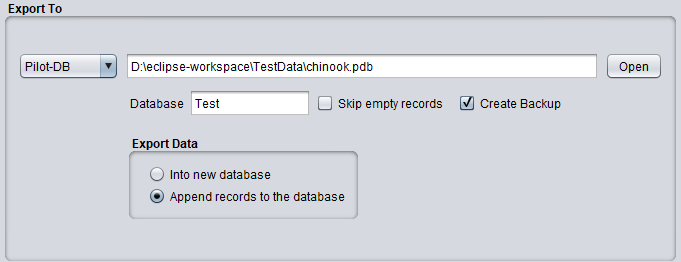

Export To Palm Databases

Export Data
- Into new database
This option creates a new database. Should a previous copy of the "Export To" database file already exist then
DBConvert/FNprog2PDA will overwrite it.
- Append records to the database
Similar as the previous option, but in this case the new records are appended to the existing records in the
database.